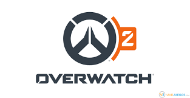

Descripción del Juego
Overwatch 2, la anticipada continuación del exitoso título, es un juego en línea que ha capturado la atención global al combinar hábilmente estrategia y acción. Desarrollado por Blizzard Entertainment, el juego presenta un variado conjunto de héroes, cada uno con habilidades únicas, participando en emocionantes partidas 6v6 en diversos escenarios, donde la colaboración estratégica y la adaptabilidad son esenciales.

Curiosidad
Overwatch 2 salio al mercado el 4 de octubre de 2022 consiguiendo un gran publico de jugadores reviviendo el juego despues de la gran perdida que fue ocasionado en overwatch 1, la estrategia para revivir este juego fue simple, paso de llamarse overwatch a overwatch2 y hicieron que fuera gratis enved de un juego de pago y asi lograron revivir el juego por completo
